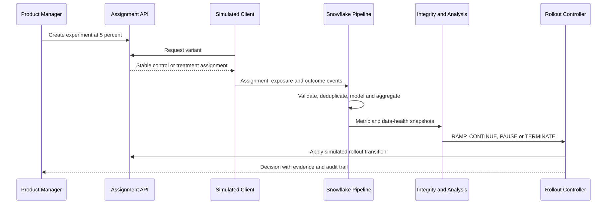

SW01/04
Guardrail
A Snowflake experimentation platform that decides whether a feature is safe to ship — assigning variants, ingesting telemetry through Redpanda and Snowpipe Streaming, running statistical tests, and blocking the rollout when the telemetry itself can't be trusted.
4.8%
View source
False conversion lift caught and blocked — mobile clients were switching variants mid-session